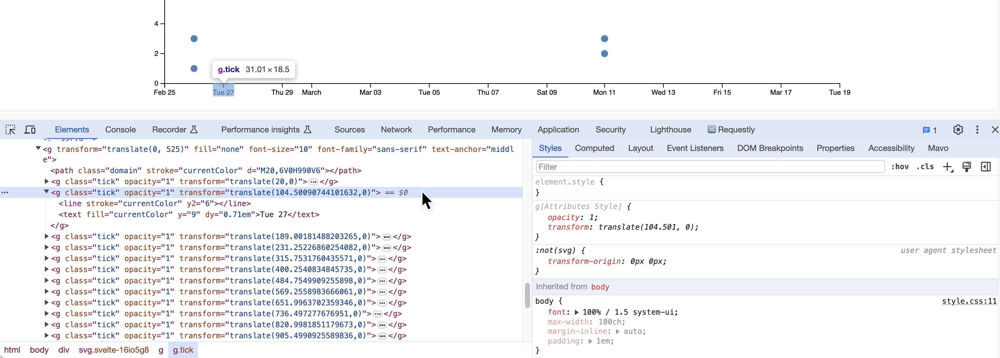
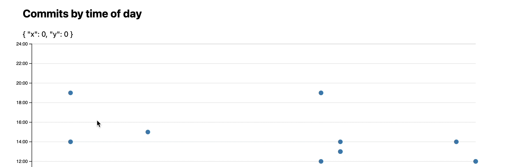
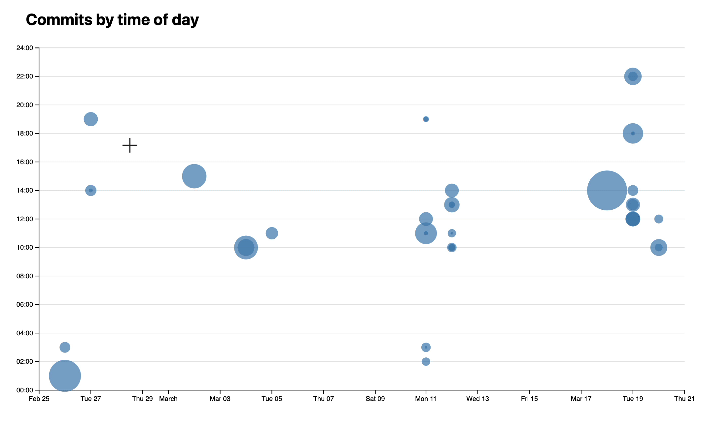

Lab 7: Visualizing quantitative data with D3
In this lab, we will learn:
- How do we draw visualizations for quantitative data, such as bar charts and scatter plots, using D3
- How to show tooltips on hover as a way to provide more information about the data
- How to compute summary statistics about our data in a structured a way
Table of contents
- Lab 7: Visualizing quantitative data with D3
- Check-off
- Questions Doc
- Slides (or lack thereof)
- Step 0: Setting up
- Step 1: Displaying summary stats
- Step 2: Visualizing time and day of commits in a scatterplot
- Step 3: Adding a tooltip
- Step 4: Communicating lines edited via the size of the dots (optional)
- Step 5: Brushing
- Step 5.1: Setting up the brush
- Step 5.2: Getting our tooltips back
- Step 5.3: Styling the selection rectangle (optional)
- Step 5.4: Making the brush actually select dots
- Step 5.4: Showing count of selected commits
- Step 5.5: Showing breakdown of languages across all lines edited in selected commits
- Step 5.6: Drawing a pie chart of the language breakdown
Check-off
You need to come to TA Office Hours to get checked off for this lab (any of them, no appointment needed). Please fill in the check-off form at labs/7/checkoff before your check-off. Ideally you should fill in the form right before your check-off, but it’s ok if you fill it out in advance.
Filling out the form is a necessary but not sufficient condition to get checked-off. You still need to come to office hours in person for your check-off to be processed.
You could even fill it out before you finish the lab, since we won’t look at it until your check-off, but the closer to the end of the lab you fill it out, the more meaningful your feedback will be.
Questions Doc
Add questions to the questions doc throughout the lecture and lab! After lab, come to office hours or ask on Discourse for futher questions!
Slides (or lack thereof)
Just like the previous lab, there are no slides for this lab! Since the topic was covered in last Monday’s lecture, it can be helpful for you to review the material from it.
This lab is a little more involved than most of the previous labs, because it’s introducing the core technical material around data visualization. A robust understanding of these concepts will be invaluable as you work on your final projects, so spending time practicing them for the lab will be time will spent.
Step 0: Setting up
This step takes you through several prepratory steps before we can work on the main part of the lab.
Step 0.1: Adding a new page with meta-analysis of the code in our project
In this lab, we will be computing and visualizing different stats about our codebase. We will display these in a new page on our website. Create a routes/meta/+page.svelte file and add some content in it (e.g. a heading, a description).
Add it to your navigation menu.

Step 0.2: Adding code analysis script
In this step you will install our code analysis script which will analyze the code of our app and display some statistics about it.
If you’re interested in the details of how this script works, you can examine its code in its repo. It’s just some JS code that runs in Node.js :) (and it’s not that long either!)
First, open the terminal and run this, to install the package that will do the analysis:
npm install elocuent -D
Now in your terminal, run this command:
npx elocuent -d static,src -o static/loc.csv
Or this, if you’ve used spaces for indentation (replace 2 with the number of spaces):
npx elocuent -d static,src -o static/loc.csv --spaces 2
Make sure your indentation is consistent across your code!
Two very popular tools to ensure a consistent code style are ESLint (JS only) and Prettier (JS, CSS, HTML) They have different philosophies: ESLint is a linting tool: you define what rules you want to follow, and it warns you when you don’t follow them (often it can fix them too, but you need to explicitly ask it to). Prettier is a code formatter: when you hit Save it auto-formats your code based on its predefined rules. Linters give you more control, whereas code formatters are more hands-off but also less flexible.
If everything went well, you should now have a file called loc.csv in the static directory. Its content should look like this (showing first 30 lines):
First 30 lines of loc.csv
file,line,type,commit,author,date,time,timezone,datetime,depth,length
src/app.html,1,html,7d3b906,Lea Verou,2024-02-26,01:33:51,-05:00,2024-02-26T01:33:51-05:00,0,15
src/app.html,2,html,7d3b906,Lea Verou,2024-02-26,01:33:51,-05:00,2024-02-26T01:33:51-05:00,0,16
src/app.html,3,html,7d3b906,Lea Verou,2024-02-26,01:33:51,-05:00,2024-02-26T01:33:51-05:00,1,5
src/app.html,4,html,7d3b906,Lea Verou,2024-02-26,01:33:51,-05:00,2024-02-26T01:33:51-05:00,2,22
src/app.html,5,html,7d3b906,Lea Verou,2024-02-26,01:33:51,-05:00,2024-02-26T01:33:51-05:00,2,26
src/app.html,6,html,7d3b906,Lea Verou,2024-02-26,01:33:51,-05:00,2024-02-26T01:33:51-05:00,2,55
src/app.html,7,html,7d3b906,Lea Verou,2024-02-26,01:33:51,-05:00,2024-02-26T01:33:51-05:00,2,68
src/app.html,8,html,3c2ea132,Lea Verou,2024-03-02,15:26:34,-05:00,2024-03-02T15:26:34-05:00,2,59
src/app.html,9,html,04217ac3,Lea Verou,2024-02-27,14:46:20,-05:00,2024-02-27T14:46:20-05:00,2,64
src/app.html,10,html,7d3b906,Lea Verou,2024-02-26,01:33:51,-05:00,2024-02-26T01:33:51-05:00,2,14
src/app.html,11,html,7d3b906,Lea Verou,2024-02-26,01:33:51,-05:00,2024-02-26T01:33:51-05:00,1,6
src/app.html,12,html,7d3b906,Lea Verou,2024-02-26,01:33:51,-05:00,2024-02-26T01:33:51-05:00,1,41
src/app.html,13,html,7d3b906,Lea Verou,2024-02-26,01:33:51,-05:00,2024-02-26T01:33:51-05:00,2,51
src/app.html,14,html,7d3b906,Lea Verou,2024-02-26,01:33:51,-05:00,2024-02-26T01:33:51-05:00,1,6
src/app.html,15,html,7d3b906,Lea Verou,2024-02-26,01:33:51,-05:00,2024-02-26T01:33:51-05:00,0,7
src/routes/+page.svelte,1,svelte,7d3b906,Lea Verou,2024-02-26,01:33:51,-05:00,2024-02-26T01:33:51-05:00,0,21
src/routes/+page.svelte,2,svelte,7d3b906,Lea Verou,2024-02-26,01:33:51,-05:00,2024-02-26T01:33:51-05:00,0,43
src/routes/+page.svelte,3,svelte,7d3b906,Lea Verou,2024-02-26,01:33:51,-05:00,2024-02-26T01:33:51-05:00,0,40
src/routes/+page.svelte,4,svelte,7d3b906,Lea Verou,2024-02-26,01:33:51,-05:00,2024-02-26T01:33:51-05:00,1,102
src/routes/+page.svelte,5,svelte,7d3b906,Lea Verou,2024-02-26,01:33:51,-05:00,2024-02-26T01:33:51-05:00,1,76
src/routes/+page.svelte,6,svelte,7d3b906,Lea Verou,2024-02-26,01:33:51,-05:00,2024-02-26T01:33:51-05:00,1,39
src/routes/+page.svelte,7,svelte,bdb6236e,Lea Verou,2024-02-26,03:26:16,-05:00,2024-02-26T03:26:16-05:00,0,4
src/routes/+page.svelte,8,svelte,bdb6236e,Lea Verou,2024-02-26,03:26:16,-05:00,2024-02-26T03:26:16-05:00,0,0
src/routes/+page.svelte,9,svelte,bdb6236e,Lea Verou,2024-02-26,03:26:16,-05:00,2024-02-26T03:26:16-05:00,0,8
src/routes/+page.svelte,10,js,04217ac3,Lea Verou,2024-02-27,14:46:20,-05:00,2024-02-27T14:46:20-05:00,0,42
src/routes/+page.svelte,11,js,5c703cf0,Lea Verou,2024-02-27,19:56:10,-05:00,2024-02-27T19:56:10-05:00,0,44
src/routes/+page.svelte,12,js,50612a03,Lea Verou,2024-03-05,11:11:52,-05:00,2024-03-05T11:11:52-05:00,0,68
src/routes/+page.svelte,13,js,50612a03,Lea Verou,2024-03-05,11:11:52,-05:00,2024-03-05T11:11:52-05:00,0,19
src/routes/+page.svelte,14,js,50612a03,Lea Verou,2024-03-05,11:11:52,-05:00,2024-03-05T11:11:52-05:00,1,8
You can find a description of the metadata stored here.
Why are we using CSV instead of e.g. JSON? CSV is more efficient for data that has many rows, since we don’t need to repeat the names of the properties for every row.
Do periodically re-run the script as you work through the lab to see the data update!
Step 0.3: Setting it up so that the CSV file is generated on every build
We want the CSV file to be generated every time we build our app, so that it’s always up-to-date. We can do that by adding a prebuild script to our package.json that runs npx elocuent. Right above this line in package.json:
"build": "vite build",
add:
"prebuild": "npx elocuent -d static,src -o static/loc.csv",
We also need make sure that our build environment (which we specify in deploy.yml) has access to all of our Git history. To do this, open .github/workflows/deploy.yml and modify the Checkout step so that it looks like this:
- name: Checkout
uses: actions/checkout@v4
with:
fetch-depth: '0'
fetch-depth: '0' tells GitHub actions to fetch all history for all branches and tags. By default, the action will only fetch the latest commit, so your deployed scatterplot will only have one dot!
Now, every time we run npm run build, elocuent will be run first.
Step 0.4: Exclude CSV from committed files.
Since we are now generating the script on the server as well, there is no reason to include it in our commits. Add static/loc.csv to your .gitignore file.
If you have already committed it, you will need to first delete the file, commit & push the deletion and the addition to .gitignore, and only after that re-run the script to re-generate it.
Step 1: Displaying summary stats
Step 1.1: Reading the CSV file in D3
In our routes/meta/+page.svelte file, we will now read the CSV file. Thankfully, we don’t have to reinvent the wheel and parse CSV files ourselves, D3 has a built-in function for that.
Add a <script> element to the Meta page, and import D3, like you did in the previous lab:
import * as d3 from 'd3';
We will be using the d3.csv() function from the d3-fetch module, which provides helper functions for fetching data.
Now let’s read the CSV file:
import { onMount } from 'svelte';
let data = [];
onMount(async () => {
data = await d3.csv('loc.csv');
});
and let’s print out the total lines of code in our repo in the HTML to make sure it worked:
<p>Total lines of code: {data.length}</p>
If everything went well, you’ll be seeing something like this:

To see the structure of these objects, add a console.log(data) right after the statement that sets the variable, then check your console.
You should be seeing something like this(I’ve expanded the first row):

Note that everything is a string, including the numbers and dates. That can be quite a footgun when handling data *(as an anecdote, I spent about an hour debugging an issue caused by using + to add two numbers together, which instead concatenated them as strings while developing this very lab!*). To fix it, we add a row conversion function:
data = await d3.csv('loc.csv', (row) => ({
...row,
line: Number(row.line), // or just +row.line
depth: Number(row.depth),
length: Number(row.length),
date: new Date(row.date + 'T00:00' + row.timezone),
datetime: new Date(row.datetime),
}));
It should now look like this: 
Don’t forget to delete this line now that we’re done — we don’t want to clutter our page with debug info!
Step 1.2: Computing commit data
Notice that while this data includes information about each commit1 (that still has an effect on the codebase), it’s not in a format we can easily access, but mixed in with the data about each line (this is called denormalized data).
Let’s extract this data about commits in a separate object for easy access. We will compute this inside onMount after reading the CSV file.
First, define a commits variable outside onMount:
let commits = [];
Then, inside onMount, we will use the d3.groups() method to group the data by the commit property.
commits = d3.groups(data, (d) => d.commit);
This will give us an array where each element is an array with two values:
- The first value is the unique commit identifier
- The second value is an array of objects for lines that have been modified by that commit.
Print it out with {JSON.stringify(commits, null, "\t")} to see what it looks like!
To transform this into an array of objects about each commit, with a lines property that contains the number of lines that were modified by that commit:
commits = d3
.groups(data, (d) => d.commit)
.map(([commit, lines]) => {
let first = lines[0];
let { author, date, time, timezone, datetime } = first;
let ret = {
id: commit,
url: 'https://github.com/vis-society/lab-7/commit/' + commit,
author,
date,
time,
timezone,
datetime,
hourFrac: datetime.getHours() + datetime.getMinutes() / 60,
totalLines: lines.length,
};
// Like ret.lines = lines
// but non-enumerable so it doesn’t show up in JSON.stringify
Object.defineProperty(ret, 'lines', {
value: lines,
configurable: true,
writable: true,
enumerable: false,
});
return ret;
});
Check it out by adding console.log(commits) after setting it. In my case it looks like this:

Step 1.3: Displaying the stats
Let’s get our feet wet with this data by displaying a few more stats. Use a <dl> list that reuses the same formatting as in the stats on your homepage.
Avoid copy-pasting the CSS. You can either create a class and define the styling for dl.stats and its children in your style.css file, or create a <Stats> Svelte component that wraps it (I went with the former for simplicity, but the “proper” way is the latter).
Delete the paragraph we added in the previous step and display that as the first stat:
<dl class="stats">
<dt>Total <abbr title="Lines of code">LOC</abbr></dt>
<dd>{data.length}</dd>
</dl>
You can display the total number of commits as the second statistic.
What other aggregate stats can you calculate about the whole codebase? Here are a few ideas (pick 3-4 from the list below, or come up with your own):
- Number of files in the codebase
- Maximum file length (in lines)
- Longest file
- Average file length (in lines)
- Average line length (in characters)
- Longest line length
- Longest line
- Maximum depth
- Deepest line
- Average depth
- Average file depth
- Time of day (morning, afternoon, evening, night) that most work is done
- Day of the week that most work is done

You will find the d3-array module very helpful for these kinds of computations, and especially:
Following is some advice on how to calculate these stats depending on their category.
Aggregates over the whole dataset
These compute an aggregate (e.g. sum, mean, min, max) over a property across the whole dataset.
Examples:
- Average line length
- Longest line
- Maximum depth
- Average depth
These involve using one of the data summarization methods over the whole dataset, mapping to the property you want to summarize, and then applying the method. For example, to calculate the maximum depth, you’d use d3.max(data, d => d.depth). To calculate the average depth, you’d use d3.mean(data, d => d.depth).
Number of distinct values
These compute the number of distinct values of a property across the whole dataset.
Examples:
- Number of files
- Number of authors
- Number of days worked on site
To calculate these, you’d use d3.group() / d3.groups() to group the data by the property you want to count the distinct values of, and then use result.size / result.length respectively to get the number of groups.
For example, the number of files would be d3.group(data, d => d.file).size, (or d3.groups(data, d => d.file).length).
Grouped aggregates
These are very interesting stats, but also the most involved of the bunch. These compute an aggregate within a group, and then a different aggregate across all groups.
Examples:
- Average file length (in lines)
- Average file depth (average of max depth per file)
First, we use d3.rollup() / d3.rollups() to compute the aggregate within each group. If it seems familiar, it’s because we used it in the previous lab to calculate projects per year. For example, to calculate the average file length, we’d use d3.rollups() to callculate lengths for all files via
$: fileLengths = d3.rollups(
data,
(v) => d3.max(v, (v) => v.line),
(d) => d.file,
);
Then, to find the average of those, we’d use d3.mean() on the result:
$: averageFileLength = d3.mean(fileLengths, (d) => d[1]);
Min/max value
These involve finding not the min/max of a property itself, but another property of the row with the min/max value. This can apply both to the whole dataset and to groups.
Examples:
- Longest file
- Longest line
- Deepest line
- Time of day (morning, afternoon, evening, night) that most work is done
- Day of the week that most work is done
For example, let’s try to calculate the time of day that the most work is done. We’d use date.toLocaleString() to get the time of day and use that as the grouping value:
$: workByPeriod = d3.rollups(
data,
(v) => v.length,
(d) => d.datetime.toLocaleString('en', { dayPeriod: 'short' }),
);
Then, to find the period with the most work, we’d use d3.greatest() instead of d3.max() to get the entire element, then access the name of the period with .[0]:
$: maxPeriod = d3.greatest(workByPeriod, (d) => d[1])?.[0];
Step 2: Visualizing time and day of commits in a scatterplot
Now let’s visualize our edits in a scatterplot with the time of day as the Y axis and the date as the X axis.
Step 2.1: Drawing the dots
First, let’s define a width and height for our coordinate space in our <script> block:
let width = 1000,
height = 600;
Then, in the HTML we add an <svg> element to hold our chart, and a suitable heading (e.g. “Commits by time of day”):
<svg viewBox="0 0 {width} {height}">
<!-- scatterplot will go here -->
</svg>
And a <style> element to hold styles:
<style>
svg {
overflow: visible;
}
</style>
Now, as shown in the Web-based visualization lecture, we create scales to map our data to the coordinate space using the d3-scale module.
We will need two scales: a Y scale for the times of day, and an X scale for the dates.
The Y scale (yScale variable) is a standard linear scale that maps the hour of day (0 to 24) to the Y axis (0 to height).
But for the X scale (xScale variable), there’s a few things to unpack:
- Instead of a linear scale, which is meant for any type of quantitative data, We use a time scale which handles dates and times automagically. It works with JS
Dateobjects, which we already have in thedatetimeproperty of each commit. - We can use
d3.extent()to find the minimum and maximum date in our data in one fell swoop instead of computing it separately viad3.min()andd3.max(). - We can use
scale.nice()to extend the domain to the nearest “nice” values (e.g. multiples of 5, 10, 15, etc. for numbers, or round dates to the nearest day, month, year, etc. for dates).
Once we have both scales, we can draw the scatter plot by drawing circles with the appropriate coordinates inside our <svg> element:
<g class="dots">
{#each commits as commit, index }
<circle
cx="{"
xScale(commit.datetime)
}
cy="{"
yScale(commit.hourFrac)
}
r="5"
fill="steelblue"
/>
{/each}
</g>
The group (<g>) element is not necessary, but it helps keep the SVG structure a bit more organized once we start adding other visual elements.
If we preview at this point, we’ll get something like this:

That was a bit anti-climactic! We did all this work and all we got was a bunch of dots?
Indeed, without axes, a scatterplot does not even look like a chart. Let’s add them!
Step 2.2: Adding axes
As shown in lecture, the first step to add axes is to create space for them. We define margins in our JS:
let margin = { top: 10, right: 10, bottom: 30, left: 20 };
Then we adjust our scales to account for these margins by changing:
- The range of the X scale from
[0, width]to[margin.left, width - margin.right] - The range of the Y scale from
[height, 0]to[height - margin.bottom, margin.top]
For readability and convenience, you can also define a usableArea variable to hold these bounds, since we’ll later need them for other things too:
let usableArea = {
top: margin.top,
right: width - margin.right,
bottom: height - margin.bottom,
left: margin.left,
};
usableArea.width = usableArea.right - usableArea.left;
usableArea.height = usableArea.bottom - usableArea.top;
Now the ranges become much more readable:
[usableArea.left, usableArea.right]for the X scale[usableArea.bottom, usableArea.top]for the Y scale
Then we create xAxis and yAxis variables in our JS to hold our axes:
let xAxis, yAxis;
and <g> elements that we bind to them:
<g transform="translate(0, {usableArea.bottom})" bind:this={xAxis} />
<g transform="translate({usableArea.left}, 0)" bind:this={yAxis} />
Make sure these elements come before your dots, since SVG paints elements in the order they appear in the document, and you want your dots to be painted over anything else.
Then we use d3.select() to select these elements and apply the axes to them via d3-axis functions:
let xAxis, yAxis;
$: {
d3.select(xAxis).call(d3.axisBottom(xScale));
d3.select(yAxis).call(d3.axisLeft(yScale));
}
If we view our scatterplot now, we’ll see something like this:

Much better, right?
But how does it work? Right click one of the points in the axes and select “Inspect Element”. You will notice that the ticks are actually <g> elements with <text> elements inside them.

Only thing that remains is to actually format the Y axis to look like actual times. We can do that using the axis.tickFormat() method:
d3.select(yAxis).call(
d3
.axisLeft(yScale)
.tickFormat((d) => String(d % 24).padStart(2, '0') + ':00'),
);
What is this function actually doing? Let’s break it down:
d % 24uses the remainder operator (%) to get0instead of24for midnight (we could have doned === 24? 0 : dinstead)String(d % 24)converts the number to a stringstring.padStart()formats it as a two digit number Finally, we append":00"to it to make it look like a time.
D3 provides a host of date/time formatting helpers in the d3-time-format module, however for this case, simple string manipulation is actually easier.
The result looks like this:

Step 2.3: Adding horizontal grid lines
Axes already improved our plot tenfold (it now looks like an actual scatterplot for one!) but it’s still hard to see what X and Y values each dot corresponds to.
Let’s add grid lines to make it easier to read the plot at a glance.
When adding grid lines, there are a few tradeoffs to consider. You want to make them prominent enough to assist in reading the chart, but not so prominent that they add clutter and distract from the data itself. Err on the side of fewer, fainter grid lines rather than dense and darker ones.
We will only create horizontal grid lines for simplicity, but you can easily add vertical ones too if you want (but be extra mindful of visual clutter).
Conceptually, there is no D3 primitive specifically for grid lines. Grid lines are basically just axes with no labels and freakishly long ticks. 😁
So we add grid lines in a very similar way to how we added axes, but we use the tickSize method to make the lines extend across the whole chart.
Just like with the axes, we create a JS variable to hold the axis (I called it yAxisGridlines), and use a reactive statement that starts off identical to the one for our yScale. However, instead of a proper tickFormat() that actually formats axis labels, we use tickFormat("") to remove the labels. Thenm we use the axis.tickSize() method with a tick size of -usableArea.width to make the lines extend across the whole chart (the - is to flip them).
We also need to create a <g> element to hold the grid lines. Let’s give it a class of gridlines so we can style it later:
<g
class="gridlines"
transform="translate({usableArea.left}, 0)"
bind:this="{yAxisGridlines}"
/>
Make sure that your <g> element for the grid lines comes before the <g> element for the Y axis, as you want the grid lines to be painted under the axis, not over it.
So far, we’ve only recreated our Y axis but without the formatting. How do we turn that into grid lines? First, we will use axis.tickFormat() again, but this time to remove the text:
$: {
d3.select(yAxisGridlines).call(d3.axisLeft(yScale).tickFormat(''));
}
Then, we use the axis.tickSize() method to make the lines extend across the whole chart:
$: {
d3.select(yAxisGridlines).call(
d3.axisLeft(yScale).tickFormat('').tickSize(-usableArea.width),
);
}
If we look now, we already have grid lines, but they look a bit too prominent.
Let’s add some CSS to fix this:
.gridlines {
stroke-opacity: 0.2;
}
Much better now!


Do not use .gridlines line, .gridlines .tick line or any other descendant selector to style the lines: Svelte thinks it’s unused CSS and removes it!
Coloring each line based on the time of day, with bluer colors for night times and orangish ones for daytime? 😁
Step 3: Adding a tooltip
Even with the gridlines, it’s still hard to see what each dot corresponds to. Let’s add a tooltip that shows information about the commit when you hover over a dot.
Step 3.1: Static element
First, we’ll render the data in an HTML element, and once we’re sure eveyrthing works well, we’ll make it look like a tooltip.
Similarly to Step 5.2 of the previous lab, when we were selecting a pie wedge, we will now use with a hoveredIndex variable to hold the index of the hovered commit, and a hoveredCommit variable that is reactively updated every time a commit is hovered and holds the data we want to display in the tooltip:
let hoveredIndex = -1;
$: hoveredCommit = commits[hoveredIndex] ?? hoveredCommit ?? {};
Then, in our SVG, we add mouseenter and mouseleave event listeners on each circle:
<!-- Other attributes/directives not shown for brevity -->
<circle on:mouseenter={evt => hoveredIndex = index} on:mouseleave={evt =>
hoveredIndex = -1} />
Ignore the accessibility warnings for now, we will get to them once we get the base functionality working.
Now add an element to display data about the hovered commit:
<dl id="commit-tooltip" class="info tooltip">
<dt>Commit</dt>
<dd>
<a href="{ hoveredCommit.url }" target="_blank">{ hoveredCommit.id }</a>
</dd>
<dt>Date</dt>
<dd>{ hoveredCommit.datetime?.toLocaleString("en", {dateStyle: "full"}) }</dd>
<!-- Add: Time, author, lines edited -->
</dl>
In the CSS, we add two rules:
dl.infowith grid layout so that the<dt>s are on the 1st column and the<dd>s on the 2nd, remove their default margins, and apply some styling to make the labels less prominent than the values..tooltipwithposition: fixedto it andtop: 1em;andleft: 1em;to place it at the top left of the viewport so we can see it regardless of scroll status.
Why not just add everything on a single CSS rule? Because this way we can reuse the .info class for other <dl>s that are not tooltips and the .tooltip class for other tooltips that are not <dl>s.
What’s the difference between fixed and absolute positioning? position: fixed positions the element relative to the viewport, while position: absolute positions it relative to the nearest positioned ancestor (or the root element if there is none). The position offsets are specified via top, right, bottom, and left properties (or their shorthand, inset) In practice, it means that position: fixed elements stay in the same place even when you scroll, while position: absolute elements scroll with the rest of the page.
We should also apply some hover styles on the dots, e.g to smoothly make them bigger when hovered we can do something like this:
circle {
transition: 200ms;
&:hover {
transform: scale(1.5);
}
}
If you preview now, you will see some weirdness (slowed down by 10x):

This is because in SVG by default the origin of transforms is the top left corner of the coordinate system. To fix that and set the origin to the center of the dot itself, we need two properties:
transform-origin: center;
transform-box: fill-box;
The hover effect now looks far more reasonable:

Overall, at the end of this step, we should have something like this:
Step 3.2: Making it look like a tooltip
Seeing this info is already useful, but it’s not really a tooltip yet. There are three components to making our <dl> an actual tooltip:
- Styling it like a tooltip (e.g. giving it a shadow that makes it look raised from the page)
- Making it only appear when we are hovering over a dot (Step 3.3)
- Positioning it near the mouse cursor (Step 3.4)
I will do them in that order, but these are largely independent tasks that can be done in either order. If anything, doing 3 before 1 and 2 might help motivate them better.
In terms of styling, you should definitely give it a background-color as otherwise the text will be hard to read. You can either go for a solid color (e.g. white) or a semi-transparent color (e.g. oklch(100% 0% 0 / 80%)) that will show some of the chart behind it.
A few other useful CSS properties are:
box-shadowfor shadows. Avoid overly prominent shadows: you are trying to make it look elevated, not to decorate it. The shadow should not be distracting, but just enough to make it look like it’s floating above the page. Generally, the larger the blur radius and the more transparent the color, the more raised the element will look. Experiment with different values to see what looks best for your design.border-radiusfor rounded cornersbackdrop-filterto blur what’s underneath (frosted glass effect). This is only relevant if you have a semi-transparent background color.
You would also probably want to add some spacing between its content and the edges of the tooltip, i.e. padding.

Step 3.3: Making only appear when we are hovering over a dot
Currently, our tooltip appears even when it has no content, which is quite jarring. It also appears when we are not hovering over any dot, and just shows the previous content. That’s not too bad when it’s fixed at the top left of the viewport, but can you picture how annoying this would be if it was an actual tooltip that just won’t take a hint and go away?
We could wrap the whole tooltip with an {#if hoveredIndex > -1 }...{/if} block and it would work. However, that’s not very flexible. It makes it hard to use transition effects when the tooltip disappears (because it’s gone immediately), make it disappear with a delay to allow users to interact with it, or not disappear at all if users are actively interacting with it (hovering it or focusing elements within it).
Instead, we will use the HTML hidden attribute:
<dl class="info" hidden={hoveredIndex === -1}>
and add some CSS to hide the element by fading it out:
dl.info {
/* ... other styles ... */
transition-duration: 500ms;
transition-property: opacity, visibility;
&[hidden]:not(:hover, :focus-within) {
opacity: 0;
visibility: hidden;
}
}
It should now behave like this:
Step 3.4: Positioning the tooltip near the mouse cursor
Now, the final piece of the puzzle to make this element into an actual tooltip!
Our tooltip is currently positioned at the top left corner of the viewport (actually 1em from the top and 1em from the left) in a hardcoded way, via the top and left properties. To position it near the mouse cursor instead, we need to set these properties dynamically based on the mouse position.
Thankfully, the event object on mouse events has several properties that give us the mouse position relative to different things. To get the mouse position relative to the viewport, we can use the x and y properties of the event object.
We will declare a new variable in our JS and use it to store the last recorded mouse position:
let cursor = { x: 0, y: 0 };
Then, we will update it in our mouseenter event listener:
<!-- Other attributes/directives not shown for brevity/clarity -->
<circle
on:mouseenter={evt => {
hoveredIndex = index;
cursor = {x: evt.x, y: evt.y};
}}
/>
Print it out in your HTML via {JSON.stringify(cursor, null, "\t")} and move the mouse around to make sure it works!

As with all these debug statements, don’t forget to remove it once you verify it works.
Now let’s use these to set top and left on the tooltip:
<dl class="info" hidden={hoveredIndex === -1} style="top: {cursor.y}px; left: {cursor.x}px">
This is the result:
While we directly set top and left for simplicity, we usually want to avoid setting CSS properties directly. It’s more flexible to set custom properties that we then use in our CSS. For example, assume you wanted to subtly move the shadow as the mouse pointer moves to create more sense of depth (parallax). If we had custom properties with the mouse coordinates, we could just use them in other properties too, whereas here we’d have to set the box-shadow with inline styles too.
Step 3.5: Bulletproof positioning (optional)
Our naïve approach to positioning the tooltip near the mouse cursor by setting the top and left CSS properties works well if the tooltip is small and the mouse is near the center of the viewport. However, if the tooltip is near the edges of the viewport, it falls apart.
Try it yourself: dock the dev tools at the bottom of the window and make them tall enough that you can scroll the page. Now hover over a dot near the bottom of the page. Can you see the tooltip?

Solving this on our own is actually an incredibly complicated problem in the general case. Thankfully, there are many wonderful packages that solve it for us. We will use Floating UI here.
First, we install it via npm:
npm install @floating-ui/dom
Then, we import the three functions we will need from it:
import { computePosition, autoPlacement, offset } from '@floating-ui/dom';
Just like D3, Floating UI is not Svelte-specific and works with DOM elements. Therefore, just like we did for the axes in Step 4.2, we will use bind:this to bind a variable to the tooltip element:
let commitTooltip;
<!-- Other attributes omitted for brevity -->
<dl class="info" bind:this="{commitTooltip}"></dl>
Then, we will use computePosition() to compute the position of the tooltip based on the mouse position and the size of the tooltip. This function returns a Promise that resolves to an object with properties like x and y that we can use in our CSS instead of cursor. Therefore, let’s create a new variable to hold the position of the tooltip that we will update in our mouseenter event listener.:
let tooltipPosition = { x: 0, y: 0 };
Since the code of this event listener is growing way beyond a single line expression, it’s time to move it to a function. This is also a good chance to address those accessibility warnings we ignored earlier.
Create a new dotInteraction() function in your JS that takes the index of the dot and the event object as arguments:
function dotInteraction(index, evt) {
// code will go here
}
We’ll try something different this time: instead of creating separate functions for each event, we will invoke the same function for all events, and read evt.type to determine what to do. Instead of only handling mouse events, we will also handle focus and blur events, to make our tooltip accessible to keyboard users.
if (evt.type === 'mouseenter' || evt.type === 'focus') {
// dot hovered
} else if (evt.type === 'mouseleave' || evt.type === 'blur') {
// dot unhovered
}
Move your existing event listener code (modifying hoveredIndex) within the dotInteraction() function, and then update your event listeners to call that instead:
<!-- Other attributes/directives not shown for brevity -->
<circle on:mouseenter={evt => dotInteraction(index, evt)} on:mouseleave={evt =>
dotInteraction(index, evt)} />
To fix the accessibility issues, we should also add:
tabindex="0"to the dots to make them focusablearia-describedby="commit-tooltip"to the dots to link them to the tooltip for assistive technologyrole="tooltip"to the tooltip to indicate its purpose to assistive technologyaria-haspopup="true"to the dots to indicate that they have a tooltipon:focusandon:blurevent listeners (that also calldotInteraction())
Back to the dotInvoked() function, we can use evt.target to get the dot that was hovered over:
let hoveredDot = evt.target;
Now, in the block that handles the mouseenter/focus events, let’s use computePosition() to compute the position of the tooltip based on the position of the dot.
Another advantage of moving our code to a separate function is that we can mark this function as async, which will allow us to use await inside it. This is helpful because computePosition() returns a Promise that resolves to the position of the tooltip.
This is what it looks like:
tooltipPosition = await computePosition(hoveredDot, commitTooltip, {
strategy: 'fixed', // because we use position: fixed
middleware: [
offset(5), // spacing from tooltip to dot
autoPlacement(), // see https://floating-ui.com/docs/autoplacement
],
});
Your function should now look like:
async function dotInteraction(index, evt) {
// your code
}
We won’t go into much detail on the API of Floating UI, so it’s ok to just copy the code above. However, if you want to learn more, their docs are excellent.
Lastly, replace cursor with tooltipPosition in the style attribute of the tooltip to actually use this new object.
If you preview now, you should see that the tooltip is always visible and positioned near the hovered dot, regardless of where it is relative to the viewport.
At this point you can also remove the cursor variable and the code setting it, since we don’t need it anymore, unless there are other things you want to do where knowing the mouse position is useful.
Step 4: Communicating lines edited via the size of the dots (optional)
Note that the tiniest of edits are currently represented by the same size of dot as the largest of edits. It is common to use the size of the dots to communicate a third variable, in this case the number of lines each commit edited.
Step 4.1: Calculating our scale
We will need to define a new scale to map the number of lines edited to the radius of the dots. This means we need to first…
- Decide on the minimum and maximum radii we want to allow. Edit the circle
rattribute and play around with different radii to decide. I settled on2and30. - Calculate the range of values for number of lines edited by a single commit. As with Step 4.1, we can use
d3.extent()to find the minimum and maximum value in one go.
Then define a new linear scale (I called it rScale) using d3.scaleLinear() mapping the domain of the number of lines edited to the range of radii we decided on.
Then, in our HTML, instead of a hardcoded 5, set the circle radius to rScale(commit.totalLines).
If everything went well, you should now see that the dots are now different sizes depending on the number of lines of each!
As one last tweak, apply fill-opacity to the dots to make them more transparent, since the larger they are, the more likely to overlap. You can only apply it when the dots are not hovered, as an extra cue.

Step 4.2: Area, not radius
Hover over a few circles and pay attention to the number of lines they correspond to. What do you notice? The size of the dots is not very good at communicating the number of lines edited. This is because the area of a circle is proportional to the square of its radius (A = πr²), so a commit with double the edits appears four times as large!
To fix this, we will use a different type of scale: a square root scale. A square root scale is a type of power scale that uses the square root of the input domain value to calculate the output range value. Thankfully, the API is very similar to the linear scale we used before, so all we need to do to fix the issue is to just change the function name.

Step 4.3: Paint smaller dots over larger ones
You may notice that when dots are overlapping, it’s sometimes harder to hover over the smaller ones, if they happen to be painted underneath the larger one.
One way to fix this is to sort commits in descending order of totalLines, which will ensure the smaller dots are painted last. To do that, we can use the d3.sort() method. This would go in your onMount() callback:
commits = d3.sort(commits, (d) => -d.totalLines);
Why the minus? Because d3.sort() sorts in ascending order by default, and we want descending order, and that’s shorter than writing a custom comparator function.
Step 5: Brushing
In the previous lab, we selected single pie segments by clicking. As discussed in the A Tour through the Interaction Zoo lecture, brushing can be an effective interaction technique for selecting multiple data points in a visualization.
Once points are selected, we can further explore the dataset by displaying more data.
Step 5.1: Setting up the brush
Exactly because brushing is so fundamental to interactive charts, D3 provides a module called d3-brush to facilitate just that.
To use it, we need a reference to our <svg> element, so we use bind:this as we’ve done several in this lab. Let’s call the variable svg.
We then create the brush via:
$: d3.select(svg).call(d3.brush());
Try it! You should already be able to drag a rectangle around the chart, even though it doesn’t do anything yet.

Exciting!
Step 5.2: Getting our tooltips back
Did you notice that now that we can brush, our tooltips disappeared? 😱 What happened?!
If you inspect the chart, you will find the culprit:

So what is happening here? To make the brush work, D3 adds a rectangle overlay over the entire chart that catches all mouse events. Because of this, our circles never get hovered, and thus our tooltips never show.
Since SVG elements are painted in source order, to fix this we need the overlay to come before the dots in the DOM tree. D3 provides a selection.raise() method that moves one or more elements to the end of their parent, maintaining their relative order.
Therefore, to move the overlay to be before the dots, we will “raise” the dots and everything that comes after the overlay.
First, let’s convert the single-line reactive statement to a reactive block:
$: {
d3.select(svg).call(d3.brush());
}
Then, inside the reactive block, after the brush is created, we raise the dots and everything after the overlay:
d3.select(svg).selectAll('.dots, .overlay ~ *').raise();
That’s a funny looking selector, isn’t it? The ~ is the CSS subsequent sibling combinator and it selects elements that come after the selector that precedes it (and share the same parent).
Try it: you should now see that the tooltips are back, and the brush still works!
Step 5.3: Styling the selection rectangle (optional)
The overlay is not the only element added by d3.brush(). For example, there is a <rect class="selection> element that is used to depict the brush selection. This means you can use CSS to style it!
Just make sure to use the Svelte-specific :global() pseudo-class around .selection otherwise Svelte will drop the whole rule, as it thinks it’s unused CSS.
Here’s what I did, but feel free to experiment with your own styles:
@keyframes marching-ants {
to {
stroke-dashoffset: -8; /* 5 + 3 */
}
}
svg :global(.selection) {
fill-opacity: 10%;
stroke: black;
stroke-opacity: 70%;
stroke-dasharray: 5 3;
animation: marching-ants 2s linear infinite;
}
Step 5.4: Making the brush actually select dots
So far we can draw a selection, but it neither does anything, nor does it look like it does anything.
The first step is to actually figure out what the user has selected, both in terms of visual shapes (dots) so we can style them as selected, as well as in terms of data (commits) so we can do something with it.
d3.brush() returns a brush object, which actually fires events when the brush is moved. We can use .on() to listen to these events and do something when they happen.
Let’s start by simply logging them to the console. Let’s define a function called brushed() that takes an event object as an argument and logs it to the console:
function brushed(evt) {
console.log(evt);
}
Then, we use .on() to call this function when the brush is moved:
d3.select(svg).call(d3.brush().on('start brush end', brushed));
This line can replace your existing d3.select(svg).call(d3.brush()) code.
Open your browser console (if it’s not already open) and try brushing again. You should see a flurry of events logged to the console, a bit like this:
Try exploring these objects by clicking on the ▸ next to them.
You may notice that the selection property of the event object is an array of two points. These points represent the top-left and bottom-right corners of the brush rectangle. This array is the key to understanding what the user has selected.
Let’s create a new reactive variable that stores this selection array. I called it brushSelection. Then, inside the brushed() function, we set brushSelection to evt.selection.
If we can implement a function that tells us if a commit is selected:
function isCommitSelected(commit) {
if (!brushSelection) {
return false;
}
// TODO return true if commit is within brushSelection
// and false if not
}
We can then use this function to apply a selected class to the dots that are selected via a class:selected directive.
The core idea for the logic is to use our existing xScale and yScale scales to map the commit data to X and Y coordinates, and then check if these coordinates are within the brush selection bounds.
Another way to do it is to use the D3 scale.invert() to map the selection bounds to data, and then compare data values, which can be faster if you have a lot of data, since you only need to convert the bounds once.
Can you figure out how to do it?
Show solution
There are many ways to implement this logic, but here’s one:
let min = { x: brushSelection[0][0], y: brushSelection[0][1] };
let max = { x: brushSelection[1][0], y: brushSelection[1][1] };
let x = xScale(commit.date);
let y = yScale(commit.hourFrac);
return x >= min.x && x <= max.x && y >= min.y && y <= max.y;
The last piece of the puzzle is to add some stylng in your CSS to make the selected dots stand out. I gave them a different fill color, but the sky is the limit!
Step 5.4: Showing count of selected commits
So far, we have only been visually highlighting the selected commits, but not actually doing anything with it. Brushing is useful because it helps us interactively explore the dataset by isolating selecting different subsets.
As a first step, let’s display the number of selected commits.
$: selectedCommits = brushSelection ? commits.filter(isCommitSelected) : [];
$: hasSelection = brushSelection && selectedCommits.length > 0;
Now let’s display the number of selected commits in the HTML, under the chart:
<p>{hasSelection ? selectedCommits.length : "No"} commits selected</p>
If it works, it should look a bit like this:
Step 5.5: Showing breakdown of languages across all lines edited in selected commits
Brushing is particularly useful when dealing with connected data, such as our commits and lines of code.
Let’s display stats about the proportion of languages in the lines edited in the selected commits.
We will need to define a new reactive variable (I called it selectedLines) that holds the lines edited in the selected commits (or all commits if no/empty selection):
$: selectedLines = (hasSelection ? selectedCommits : commits).flatMap(
(d) => d.lines,
);
Then, we can use it to calculate the number of edited lines per language using d3.rollup() (or d3.rollups()), which we discussed earlier. Assign the result to a new reactive variable called languageBreakdown.
Then, we can display the result in the HTML by iterating over languageBreakdown via an {#each} block and displaying the language and the proportion of lines edited in it.
{#each languageBreakdown as [language, lines] }
<!-- Display stats here -->
{/each}
Some pointers:
- Use
lines / selectedLines.lengthto calculate the proportion of lines edited in each language. d3-formatcan be quite helpful for formatting numbers nicely. I used a".1~%"format specifier to display the proportion as a percentage with one decimal place.
If everything went well, you should see something like this:
Step 5.6: Drawing a pie chart of the language breakdown
The language breakdown is useful, but it’s not very visual. Reading numbers doesn’t make it easy to gauge the relative proportions of the different languages.
A pie chart is much better at this, but at this point we are probably way too tired to draw another chart. Thankfully, we already have a pie chart from the previous lab that we can reuse!
All we need to do is to import it in our JS:
import Pie from '$lib/Pie.svelte';
and then we can use it in our HTML to display the language breakdown as a pie chart. All we need to do is transform our data into an array of {label, value} objects, which we can do using the expression Array.from(languageBreakdown).map(([language, lines]) => ({label: language, value: lines})) and pass this array to its data prop:
<Pie data={/* array of {label, value} objects */} />
While we’re at it, we could also write JS to convert language to a more readable label.
The final result looks like this:
If you want to go further, you can think about how to make the scatterplot we made in this lab similarly reusable as a separate <Scatterplot> component.
Actually, it will only include commits that still have an effect on the codebase, since it’s based on lines of code that are currently present in the codebase. Therefore if all a commit did was change lines that have since been edited by other commits, that commit will not show up here. If we wanted to include all commits, we’d need to process the output of
git loginstead, but that is outside the scope of this lab. ↩